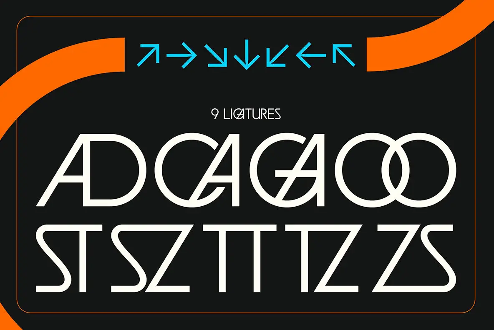

The original stays in charge: airy arrow strip, compact ligature caption, two large specimen rows, and three cropped orange ribbons inside a fine frame.
A source-led black specimen plate with clipped orange ribbons and a cyan directional glyph row.

The original stays in charge: airy arrow strip, compact ligature caption, two large specimen rows, and three cropped orange ribbons inside a fine frame.